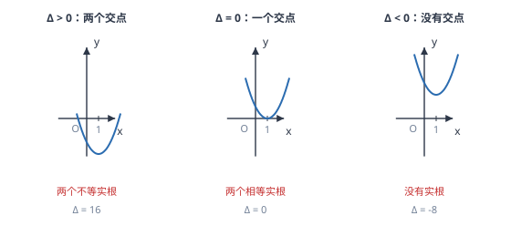

二次函数与一元二次方程
抛物线与 x 轴的交点横坐标，就是对应一元二次方程的根；判别式决定交点有几个，图象决定不等式怎么解。
| 所属主题 | 函数 |
|---|---|
| 所属模块 | 代数 |
| 课标学段 | 第四学段（7~9 年级） |
| 前置知识 | 二次函数的图象与性质、根的判别式与根与系数的关系、一元二次方程 |
| 核心素养 | 几何直观推理能力运算能力 |
教材定位
人民教育出版社《人教版（2024版）义务教育教科书·数学》
九年级上册第26章 二次函数26.3 二次函数与一元二次方程
对应九上 26.3：方程的根就是抛物线与 x 轴交点的横坐标，判别式决定交点个数。
说明
二次函数 y=ax^2+bx+c 的图象与 x 轴的交点，纵坐标都是 0。把 y=0 代入，就得到一元二次方程 ax^2+bx+c=0。所以「求抛物线与 x 轴的交点」与「解一元二次方程」是同一件事：交点的横坐标就是方程的根，方程的根就是交点的横坐标。这一对应关系把函数与方程两章连成了一条线。
交点的个数由判别式 \Delta=b^2-4ac 决定：\Delta>0 时抛物线与 x 轴有两个交点，方程有两个不等实根；\Delta=0 时抛物线与 x 轴相切、只有一个交点，方程有两个相等的实根；\Delta<0 时抛物线与 x 轴没有交点，方程没有实根。同样的思路可以推广到「抛物线与水平线 y=m 的交点」，只需解 ax^2+bx+c=m，或把它整理成 ax^2+bx+(c-m)=0 再算判别式。
使用场景
当题目要求判断抛物线与 x 轴（或与某条水平线）的交点个数、求交点坐标、或求两交点之间的距离时，用这一页的对应关系。求两交点间距离有一个简便公式：|x_1-x_2|=\dfrac\sqrt\Delta|a|，由求根公式相减即可得到。
当题目要求解二次不等式 ax^2+bx+c>0 或 <0 时，用图象法最快：先求抛物线与 x 轴的交点，再结合开口方向判断哪一段落在 x 轴上方（或下方）。例如 a>0 且有两交点 x_1<x_2 时，ax^2+bx+c>0 的解集是 x<x_1 或 x>x_2（「两边」），<0 的解集是 x_1<x<x_2（「中间」）。
注意点
交点坐标是点，必须写成有序数对 (x,0)，不能只写横坐标。题目问「交点坐标」时写 (-1,0) 与 (3,0)；问「方程的根」时才写 x=-1 或 x=3。两者的区别在于一个是点、一个是数，答题格式不同。
\Delta=0 时，抛物线与 x 轴只有一个交点，但方程有「两个相等的实根」。这两句话并不矛盾：交点是几何对象（一个点），根是代数对象（两个相同的值）。答题时要按题目问的是「交点个数」还是「根的情况」选择说法，不能混用。
证明

图 1：判别式大于零、等于零、小于零，分别对应抛物线与 x 轴有两个交点、一个交点、没有交点
证明
结论 1方程 ax^2+bx+c=0 的实数根，就是抛物线 y=ax^2+bx+c 与 x 轴交点的横坐标。
从图象的定义出发：抛物线上的每一点都满足 y=ax^2+bx+c，其中 y 是该点的纵坐标。x 轴上的点纵坐标全为 0，所以抛物线与 x 轴的交点，正是那些「使 y=0」的点。把这些点的横坐标单独拿出来，就是方程 ax^2+bx+c=0 的解。两件事共用同一个条件 y=0，所以必然一一对应。
关键一步依据是「交点同时满足两个方程」：抛物线上的点满足 y=ax^2+bx+c，x 轴上的点满足 y=0，两者同时成立正是 ax^2+bx+c=0，所以交点横坐标与方程根一一对应。
结论 2抛物线与 x 轴的交点个数由判别式决定：\Delta>0 两个，\Delta=0 相切一个，\Delta<0 没有交点。
交点个数为什么由判别式决定：方程的解由求根公式给出，x=\dfrac-b±\sqrt\Delta2a，\Delta 在根号内。\Delta>0 时正负两种取法给出两个不同的横坐标，对应两个交点；\Delta=0 时两种取法重合，两个交点并成一个，表现为抛物线与 x 轴相切；\Delta<0 时根号内为负，没有实数解，抛物线与 x 轴不相交（图 1）。
关键一步依据是根号内数的符号决定取值的个数，而交点个数与实根个数本就是同一件事：两个不同实根对应两个交点，一个重根对应相切，无实根则曲线与 x 轴没有公共点。
结论 3由顶点位置也能判断交点个数：先求顶点纵坐标，再看它与 0 的大小关系。
从图形上看，抛物线的顶点决定它与 x 轴的关系。a>0 时开口向上，顶点是最低点：最低点在 x 轴下方则穿轴两次，恰在轴上则相切，在轴上方则整条曲线都在轴上方。a<0 时开口向下，把「上方」「下方」对调即可。所以判断交点个数，也可以先求顶点纵坐标，再看它与 0 的大小关系。
关键一步依据是顶点在开口方向上是最极端的一点：a>0 时曲线不低于顶点，所以顶点在轴上方时整条曲线都在轴上方、不与轴相交；顶点恰在轴上时只有一个公共点；顶点在轴下方时曲线必然穿轴两次。
结论 4解 ax^2+bx+c=m 就是找抛物线与水平线 y=m 的交点，m 减小时交点从无到两个再到一个。
把 y=0 换成 y=m，整套逻辑照搬。解 ax^2+bx+c=m 就是找抛物线与水平线 y=m 的交点。当 m 从很大逐渐变小时，水平线与抛物线的交点从「没有」变成「两个」，再变成「一个」（相切于顶点），这个过程正是判别式从负变零再变正的过程。
关键一步依据是判别式随 m 变化而变号：方程移项后变成 ax^2+bx+c-m=0，常数项随 m 变化，判别式随之从负变零再变正，而交点个数与实根个数一致，所以两种问法看到的现象完全同步。
结论 5解二次不等式 ax^2+bx+c>0 的可靠办法是找出交点，再按开口方向确定区间。
由此还能解二次不等式。ax^2+bx+c>0 问的是「哪些 x 使抛物线在 x 轴上方」，把交点找出来、再按开口方向看区间，答案自然出现。这比死记「大于取两边、小于取中间」更可靠，因为口诀只在 a>0 且有两交点时成立。
关键一步依据是不等式的图象意义与开口方向的共同作用：交点把数轴分成几段，每段上抛物线在 x 轴上方还是下方由开口方向固定，所以必须同时用到交点位置与 a 的符号。只背口诀会在 a<0 或只有一个交点时用错。
动手实验
在同一张坐标纸上画三个二次函数：y=x^2-2x-3（\Delta=16>0）、y=x^2-2x+1（\Delta=0）、y=x^2-2x+3（\Delta=-8<0）。列表描点后可以清楚看到：第一条穿 x 轴两次（x=-1 与 x=3），第二条恰好擦过 (1,0)，第三条整条悬在 x 轴上方。三个 \Delta 的符号与三种图形状态一一对应。
解题思路
判断交点情况走三步：把函数写成一般式，写出带符号的 a、b、c；算 \Delta=b^2-4ac；按符号下结论，并说明交点的个数。若需要交点坐标，再解方程或用求根公式求出横坐标，写成 (x_1,0)、(x_2,0)。
求两交点距离，用 |x_1-x_2|=\dfrac\sqrt\Delta|a| 最快；若已求出两根，也可直接相减取绝对值。这个公式在「已知交点距离求参数」的题里特别有用：把距离平方后得到 \dfrac\Deltaa^2，解出参数。
解二次不等式走四步：求对应方程的根（先算 \Delta）；画出抛物线的草图（只需开口方向与交点位置）；看哪一段落在 x 轴上方（或下方）；写成解集，注意端点是否包含（> 不含、≥ 含）。\Delta<0 时无交点，若 a>0 则整条曲线在轴上方，ax^2+bx+c>0 的解集是全体实数。
按场景的例题
例 1（场景：图形设计） 抛物线与坐标轴的交点
已知二次函数 y=x^2-2x-3。求它与 x 轴、与 y 轴的交点坐标，并求两交点之间的距离。
解：与 y 轴的交点令 x=0，得 y=-3，即 (0,-3)。与 x 轴的交点令 y=0：x^2-2x-3=0，因式分解得 (x-3)(x+1)=0，x=3 或 x=-1，交点为 (3,0) 与 (-1,0)。两点距离 =3-(-1)=4。用公式核对：\Delta=4+12=16，|x_1-x_2|=\dfrac\sqrt161=4，一致。
答：与 x 轴交于 (-1,0)、(3,0)，与 y 轴交于 (0,-3)，两交点距离为 4。
例 2（场景：物理情境） 上抛物体的落地与经过某高度
小球竖直上抛，高度 h=20t-5t^2（米）。小球经过多少秒落回地面？它在 15 米高处经过几次，分别是什么时刻？
解：落地即 h=0：20t-5t^2=0，提公因式得 5t(4-t)=0，t=0 或 t=4。t=0 是出发时刻，t=4 是落地时刻。经过 15 米即 20t-5t^2=15，整理得 5t^2-20t+15=0，即 t^2-4t+3=0，因式分解得 (t-1)(t-3)=0，t=1 或 t=3。两次，一次在上升途中、一次在下落途中，符合抛物线的对称性（两次时刻关于 t=2 对称）。
答：t=4 秒落地；在 15 米高处经过两次，分别在 1 秒和 3 秒。
例 3（场景：竞技与游戏） 判断抛物线与 x 轴的交点个数
判断下列抛物线与 x 轴的交点个数：(1) y=x^2+2x+3；(2) y=-x^2+4x-4；(3) y=2x^2-5x+1。
解：(1) \Delta=2^2-4× 1× 3=4-12=-8<0，没有交点。(2) \Delta=4^2-4×(-1)×(-4)=16-16=0，与 x 轴相切，只有一个交点，此时顶点为 (2,0)。(3) \Delta=(-5)^2-4× 2× 1=25-8=17>0，有两个交点。注意第 (2) 题 a<0、开口向下，切点在顶点处，曲线整体在 x 轴下方。
答：(1) 无交点；(2) 一个交点；(3) 两个交点。
常用推论
抛物线与直线 y=m 的交点个数，等同于方程 ax^2+bx+(c-m)=0 的实根个数，判别式为 b^2-4a(c-m)。讨论「抛物线与水平线有几个交点」时，把 m 当作参数，解不等式 \Delta>0 即可得到 m 的范围。
两交点间距离 |x_1-x_2|=\dfrac\sqrt\Delta|a|。这个公式在「已知交点距离求参数」时最省事：把距离平方得 \dfracb^2-4aca^2，直接建立关于参数的方程。
抛物线的对称轴是 x=\dfracx_1+x_22，其中 x_1、x_2 是两交点横坐标。这条把「两根之和」与「对称轴」连了起来，也解释了为什么两根一定关于对称轴对称。
易错点
错题目问「抛物线与 x 轴的交点」，答案写成 x=-1 或 x=3。
为什么错交点是一个点，需要两个坐标；x=-1 只是一条竖直线，不是点。根与交点是不同的对象。
正确交点写成 (-1,0) 与 (3,0)。若题目问「方程的根」，才写 x_1=-1、x_2=3。
错认为 \Delta=0 时抛物线与 x 轴「有一个根」。
为什么错把几何上的「一个交点」与代数上的「根的个数」混在一起。\Delta=0 时方程有两个相等的实根，只是这两个值相同，图上表现为一个交点。
正确正确说法是「与 x 轴只有一个交点，方程有两个相等的实根」。按题目问的对象选择说法。
错解 x^2-2x-3>0 时，因为 a=1>0，直接写解集为 -1<x<3。
为什么错把「两交点之间」当成了函数为正的区间。开口向上的抛物线在两交点之间位于 x 轴下方，函数值应为负。
正确解集是 x<-1 或 x>3。用 x=0 验证：0-0-3=-3<0，说明 x=0（在两交点之间）确实让函数为负，所以「中间为负、两边为正」。
直观理解
方程与函数的关系，可以想成「一条曲线与一把水平尺的相遇」。把 y=0（即 x 轴）当作一把尺子横在那里，抛物线碰到它几次，方程就有几个根；碰不到，就没有实根；正好擦边，两个根合成一个。换成 y=m 这把尺子，上下移动它，碰到的次数就跟着变——判别式不过是「尺子高度」与「顶点高度」比较的结果。